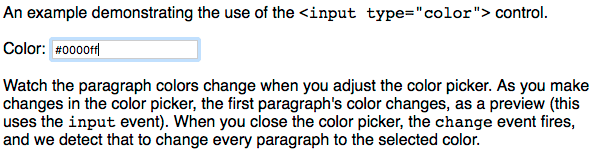
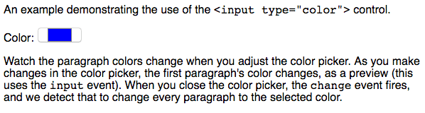
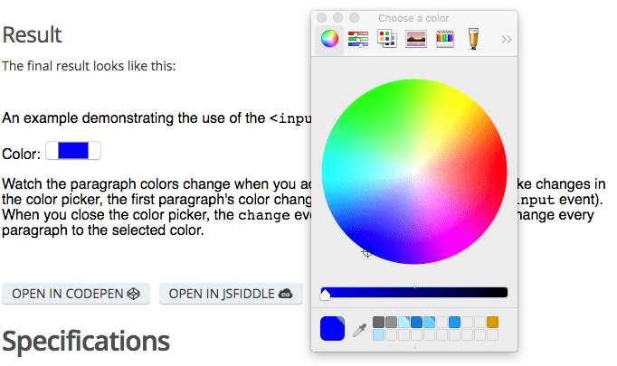

{{HTMLElement("input")}} elements of type color provide a user interface element that lets a user specify a color, either by using a visual color picker interface or by entering the color into a text field in #rrggbb hexadecimal format. Only simple colors (without alpha channel) are allowed though CSS colors has more formats, e.g. color names, functional notations and a hexadecimal format with an alpha channel.
The element's presentation may vary substantially from one browser and/or platform to another—it might be a simple textual input that automatically validates to ensure that the color information is entered in the proper format, or a platform-standard color picker, or some kind of custom color picker window.
| {{anch("Value")}} | A 7-character {{domxref("DOMString")}} specifying a {{cssxref("<color>")}} in lower-case hexadecimal notation |
| Events | {{domxref("HTMLElement/change_event", "change")}} and {{domxref("HTMLElement/input_event", "input")}} |
| Supported common attributes | {{htmlattrxref("autocomplete", "input")}} and {{htmlattrxref("list", "input")}} |
| IDL attributes | list and value |
| Methods | {{domxref("HTMLInputElement.select", "select()")}} |
The {{htmlattrxref("value", "input")}} of an {{HTMLElement("input")}} element of type color is always a {{domxref("DOMString")}} which contains a 7-character string specifying an RGB color in hexadecimal format. While you can input the color in either upper- or lower-case, it will be stored in lower-case form. The value is never in any other form, and is never empty.
Note: Setting the value to anything that isn't a valid, fully-opaque, RGB color in hexadecimal notation will result in the value being set to #000000. In particular, you can't use CSS's standardized color names, or any CSS function syntax, to set the value. This makes sense when you keep in mind that HTML and CSS are separate languages and specifications. In addition, colors with an alpha channel are not supported; specifying a color in 9-character hexadecimal notation (e.g. #009900aa) will also result in the color being set to #000000.
Inputs of type color are simple, due to the limited number of attributes they support.
You can update the simple example above to set a default value, so that the color well is pre-filled with the default color and the color picker (if any) will also default to that color:
<input type="color" value="#ff0000">
{{EmbedLiveSample("Providing_a_default_color", 700, 30)}}
If you don't specify a value, the default is #000000, which is black. The value must be in seven-character hexadecimal notation, meaning the "#" character followed by two digits each representing red, green, and blue, like this: #rrggbb. If you have colors that are in any other format (such as CSS color names or CSS color functions such as rgb() or rgba()), you'll have to convert them to hexadecimal before setting the value.
As is the case with other {{HTMLElement("input")}} types, there are two events that can be used to detect changes to the color value: {{domxref("HTMLElement/input_event", "input")}} and {{domxref("HTMLElement/change_event", "change")}}. input is fired on the <input> element every time the color changes. The change event is fired when the user dismisses the color picker. In both cases, you can determine the new value of the element by looking at its {{domxref("HTMLInputElement.value", "value")}}.
Here's an example that watches changes over time to the color value:
colorPicker.addEventListener("input", updateFirst, false);
colorPicker.addEventListener("change", watchColorPicker, false);
function watchColorPicker(event) {
document.querySelectorAll("p").forEach(function(p) {
p.style.color = event.target.value;
});
}
If the {{HTMLElement("input")}} element's implementation of the color type on the user's browser doesn't support a color well, but is instead a text field for entering the color string directly, you can use the {{domxref("HTMLInputElement.select", "select()")}} method to select the text currently in the edit field. If the browser instead uses a color well, select() does nothing. You should be aware of this behavior so your code can respond appropriately in either case.
colorWell.select();
As previously mentioned, when a browser doesn't support a color picker interface, its implementation of color inputs will be a text box that validates the contents automatically to ensure that the value is in the correct format. For example, in Safari 10.1, you would see something that looks like this:

The same content looks like this in Firefox 55:

In this case, clicking on the color well presents the platform's color picker for you to choose a color from (in this case, the macOS picker):

A color input's value is considered to be invalid if the {{Glossary("user agent")}} is unable to convert the user's input into seven-character lower-case hexadecimal notation. If and when this is the case, the {{cssxref(":invalid")}} pseudo-class is applied to the element.
Let's create an example which does a little more with the color input by tracking the {{domxref("HTMLElement/change_event", "change")}} and {{domxref("HTMLElement/input_event", "input")}} events to take the new color and apply it to every {{HTMLElement("p")}} element in the document.
The HTML is fairly straightforward — a couple of paragraphs of descriptive material with an {{HTMLElement("input")}} of type color with the ID colorWell, which we'll use to change the color of the paragraphs' text.
<p>An example demonstrating the use of the <code><input type="color"></code> control.</p> <label for="colorWell">Color:</label> <input type="color" value="#ff0000" id="colorWell"> <p>Watch the paragraph colors change when you adjust the color picker. As you make changes in the color picker, the first paragraph's color changes, as a preview (this uses the <code>input</code> event). When you close the color picker, the <code>change</code> event fires, and we detect that to change every paragraph to the selected color.</p>
First, there's some setup. Here we establish some variables, setting up a variable that contains the color we'll set the color well to when we first load up, and then setting up a {{domxref("Window/load_event", "load")}} handler to do the main startup work once the page is fully loaded.
var colorWell;
var defaultColor = "#0000ff";
window.addEventListener("load", startup, false);
Once the page is loaded, our load event handler, startup(), is called:
function startup() {
colorWell = document.querySelector("#colorWell");
colorWell.value = defaultColor;
colorWell.addEventListener("input", updateFirst, false);
colorWell.addEventListener("change", updateAll, false);
colorWell.select();
}
This gets a reference to the color <input> element in a variable called colorWell, then sets the color input's value to the value in defaultColor. Then the color input's {{domxref("HTMLElement/input_event", "input")}} event is set up to call our updateFirst() function, and the {{domxref("HTMLElement/change_event", "change")}} event is set to call updateAll(). These are both seen below.
Finally, we call {{domxref("HTMLInputElement.select", "select()")}} to select the text content of the color input if the control is implemented as a text field (this has no effect if a color picker interface is provided instead).
We provide two functions that deal with color changes. The updateFirst() function is called in response to the input event. It changes the color of the first paragraph element in the document to match the new value of the color input. Since input events are fired every time an adjustment is made to the value (for example, if the brightness of the color is increased), these will happen repeatedly as the color picker is used.
function updateFirst(event) {
var p = document.querySelector("p");
if (p) {
p.style.color = event.target.value;
}
}
When the color picker is dismissed, indicating that the value will not be changing again (unless the user re-opens the color picker), a change event is sent to the element. We handle that event using the updateAll() function, using {{domxref("HTMLInputElement.value", "Event.target.value")}} to obtain the final selected color:
function updateAll(event) {
document.querySelectorAll("p").forEach(function(p) {
p.style.color = event.target.value;
});
}
This sets the color of every {{HTMLElement("p")}} block so that its {{cssxref("color")}} attribute matches the current value of the color input, which is referred to using {{domxref("Event.target", "event.target")}}.
The final result looks like this:
{{EmbedLiveSample("Example", 700, 200)}}
{{Specifications}}
{{Compat}}